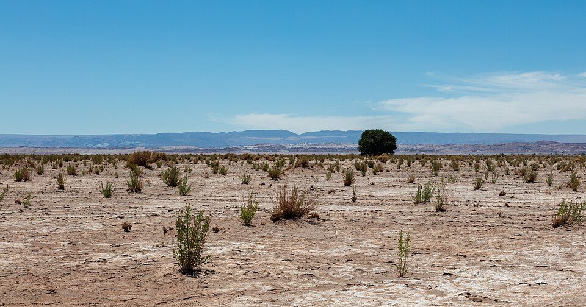

Deserts
Sand, salt and ice: the Sahara, the Atacama, the Uyuni salt flat and why Antarctica is the largest desert on the planet.


A desert is defined not by heat or sand, but by lack of rain: it is a place that receives less than 250 mm of precipitation a year and loses more water to evaporation than arrives. Deserts cover about a third of the planet's land.
The largest desert is made of ice
By that definition, the largest desert in the world is Antarctica (14 million km²), followed by the Arctic. The largest hot desert is the Sahara, at about 9.2 million km², almost as big as the United States or China.
Only about a quarter of the Sahara is sand; the rest is stony plains, mountains and plateaus. Its dunes can exceed 150 metres in height and move several metres a year.
The Sahara was once green
Between 11,000 and 5,000 years ago, a shift in Earth's orbit pushed the monsoons north and the Sahara filled with lakes, savanna, hippos, giraffes and crocodiles. Its rocks bear paintings of herders with cattle and of people swimming. Today, Saharan dust travels every year to the Amazon, which it fertilises with phosphorus, and it often coats cars in Spain with mud when the "calima" arrives.
The driest place on Earth
The Atacama Desert in Chile is the driest non-polar desert in the world. Some weather stations there have never recorded rain, and some areas may have gone centuries without significant rainfall. Its soil is so similar to that of Mars that NASA tests its robots there. And its crystal-clear skies make it home to some of the world's largest telescopes.
When it finally rains, the Atacama is covered in flowers within weeks: the phenomenon of the flowering desert.


The world's largest mirror
The Salar de Uyuni in Bolivia is the largest salt flat in the world: more than 10,000 km² of white crust, almost perfectly flat, the remains of an ancient evaporated lake. In the rainy season it is covered by a thin film of water and becomes a giant mirror reflecting the sky. Beneath the salt lies one of the planet's largest reserves of lithium, key to batteries.


Deserts of Spain
By some definitions Spain has the only desert in Europe: the Tabernas Desert in Almería, where dozens of westerns and scenes from Indiana Jones and Game of Thrones were filmed. Other semi-desert landscapes include the Bardenas Reales in Navarre and Cabo de Gata.
The great risk is desertification: the degradation of drylands through poor use of water and soil and through climate change. About three quarters of Spain's territory is susceptible to it.
Living without water
- The camel can drink more than 100 litres in a few minutes and go a week or more without drinking.
- The Namib Desert's fog-basking beetle drinks the droplets of fog that condense on its back.
- Welwitschia mirabilis, also from the Namib, has just two leaves that keep growing for more than a thousand years.
Videos to understand it better
- Deserts 101 | National GeographicNational Geographic · 1.8M views
- Why Does Earth Have Deserts?MinuteEarth · 1.6M views
Videos are from YouTube and belong to their creators. They only load when you click them. See all videos →